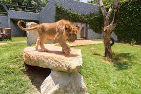

Entrada Zoo

Endereço : Av. Doná Glória Pagnonceli, 344 - Jardim Rosa de Franca, Guarulhos - SP
Como ChegarO Zoológico Municipal de Guarulhos, fundado em 1982, contém mais de 400 animais de 100 espécies em uma área de 70 mil m². A fauna é formada principalmente por aves, mamíferos e répteis nativos do Brasil, em especial da região de Guarulhos.
Atração Principal
História Completa Leão
Os leões Madiba e Kalipha nasceram no Zoológico de São Paulo e fazem parte de um programa internacional de conservação da espécie, que se encontra em risco de extinção. O Zoológico de Guarulhos é gratuito e fica na rua Dona Gloria Pagnoncelli, 344, Jardim Rosa de França.